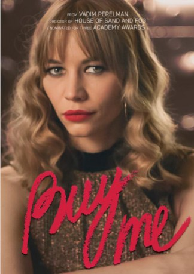

#11742 Buy Me - Käufliche Liebe
Alternativ: Kauf mich - Kupi menya (Originaltitel)
 
 IMDB-Wertung: 5.4 / 10
IMDB-Wertung: 5.4 / 10  Metascore: 0
Metascore: 0 
Katya is a girl from a wealthy family who yearns for adventure. Keeping it secret from her mother she applies to a model agency and goes to Dubai to take part in a fashion show. But instead she finds herself in an international prostitution trafficking network. Katya takes it as a fun "vacation" and miraculously escapes problems with Arab sheikhs. In Emirates she meets Liza and they go back to Moscow together. Lisa and her roommate Galya are making their living by dating rich men and they let Katya stay with them in a small rented apartment.
Jahr: 2018
Dauer: 107 Minuten
FSK: 16
Land: Russland Studio: Capelight PicturesTonspuren:
Untertitel: Deutsch,
Auflösung: 1080p (1920x808) Größe: 4638 MB
Genre: Drama
Regisseur: Vadim Perelman
Drehbuch: Darya Gratsevich
Soundtrack: Ilya Truskovsky
Darsteller:
- Maksim Al-Names als Sheikh
- Svetlana Ustinova als Galya
- Anna Adamovich als Liza
- Yuliya Khlynina als Katya
Datei: X:\2018(A-F)\Buy Me - Käufliche Liebe (2018, FSK16, 1920x808).mkv seit 14.09.2019
Festplatte: HD 2017(A-Z)-2018(A-F)
 Es gibt insgesamt 151 Filme in der Gruppe '2018(A-F)'
Es gibt insgesamt 151 Filme in der Gruppe '2018(A-F)'